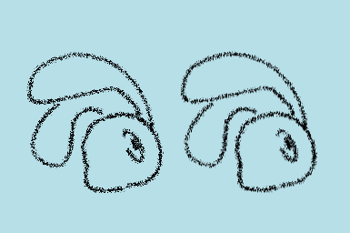
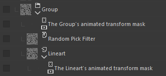
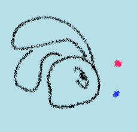
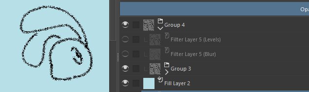
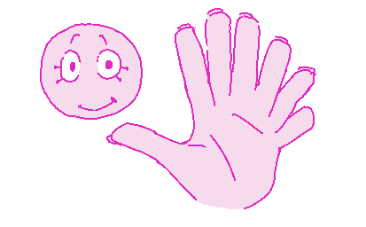

I'm pretty sure you've mentioned it before on bluesky, but how do you go about making your art wiggly in krita?
Ooh ok yay I get to explain this again teehee
I should give a warning that the way I do it is convoluted and tricky. Someone could probably write a shader and make a better version (I considered exporting my lineart to blender or unity and doing shaders there, but having it all in Krita is more convenient for me)
So, Krita has a type of filter layer called "random pick" that just applies some noise to the pixels (it moves each pixel in a random direction). This technically makes it wiggly, but it's completely static...
But if you move something around under the random pick filter, it passes through this randomness and it gets sampled differently. (shown on left)

You can just animate the lineart moving up and down and technically you've got the wiggles! But you probably don't want your lineart to be moving up and down...
The other cool thing is that you can use a transform mask to just move an entire group without affecting the sampling on the filter. (shown on right, same gif)


Ok now for the cool part... You can animate the lineart moving under the filter, but cancel out that movement by moving the group exactly the opposite amount! Kind of like if you attached a camera to the left example in the first gif.
(The blue dot represents the lineart's movement and the pink dot represents the group's movement.)
I'm using the Animation Curves feature for this. I use a transform mask on the lineart for the noise shifting, and a transform mask on the whole group for the cancellation.
To stylize it, I apply a blur filter to the whole thing and a layer to clip the alpha to make it extra crunchy. I also only use 2 frames of animation instead of 24 like in the second gif.

That's about it!! I only had to make this once and then I just turned it into a template so I could keep using it for all my wiggly drawings. I don't know if I wanna give this template out, but it would be cool to see other people using this technique! (I wouldn't be surprised if I'm not the first one to do this!)
April 07, 2026
how many

March 11, 2026
Your game system is amazing. How did you learn to code? (Are there any recommendation on references and study tips?)
I spent a lot of my childhood making games on Scratch, which taught me a lot about the logic of programming. I think it's a pretty good starting point for beginners who have absolutely zero coding experience!
But when I tried to pick up a mainstream game engine (I settled on Unity) I was thrown off by the fact that I had to actually write code instead of dragging blocks around. It took me a while to get used to, and I slowly eased myself into learning Unity through a visual scripting add-on called Bolt (which Unity has now acquired, and it's now just called Visual Scripting in Unity) before I finally forced myself to learn C#. I'm so glad I did...
Anyways, I've always learned new stuff through experimentation and "finding out stuff the hard way" (trying to do something the wrong way, even if it's more intuitive to me, then begrudgingly learning how to do it the proper way, which I then learn is much cleaner and more efficient - for example, when I was making Delayed Trickshot, most of the logic for the entire game was handled in a single gameobject in a single script. Lol)
I still do think experimentation is the most fun way of learning how to make games, as long as you set your expectations pretty low and surprise yourself with what you can learn to make! But I don't know, I'm still learning a lot about how to code. You should definitely also follow tutorials, there's lots of good stuff on Youtube. I know that isn't a very specific recommendation, but it all really depends on what you actually want to make, even just within game development.
March 06, 2026
Are there cookies at the function?
Yeah I think so
February 17, 2026
Oh, hey! Didn't know this feature was here
Anyhow, do you have any designs of yours that you wish you could draw more &/or give more love in general?
Ooohhhh hmmm that's a good question...
I think all the characters that I've designed are characters I draw a decent amount to my own satisfaction, but there are a lot of vague character ideas that I toss and turn in my head that I really want to exist eventually but haven't gotten around to making yet...
Like, I reeeally wanna make robot characters or, like, just characters for a science fiction universe. They would definitely still be furry-coded (teehee) but I would want them to be a specific sort of species or fit into a sensible world rather than the magic-y nonsense half-worldbuilding I do for Staraway (Which for Staraway is perfectly fine, it's not a worldbuilding project, it's a narrative game about transgender animals. But I yearn to worldbuild someday)
I really want to eventually break out of the "cute" character style I have for Staraway and do stuff that's a lot more crazy and out there... But that doesn't have to happen anytime soon haha
I also want to draw my silly Banana Slug and Giraffe more because I like them a lot... And because a snake is asking this question, I should mention that I want to make another snake character and I have some ideas for that but we will see if that becomes of anything...
February 02, 2026
Will planet suckulon 5 appear in staraway :33
No, but it will appear in Staraway 2: Journey to Planet Suckulon 5
January 08, 2026
How long have you been making art for, and which work of yours are you proudest of?
I can't really remember when I started drawing..... I guess I've been doing it for most of my life? But I think I only started drawing well in more recent years, and I actually only started drawing actual characters around early 2022. Before then, I drew a lot of Minecraft stuff and plenty of weird geometric doodles.
These ones were probably drawn around 2020:


I tend to dislike a lot of my old art, even if it was only made a year ago... I guess I change how I draw my characters over time, and so anything drawn more than like six months ago feels outdated haha. I'm most proud of art I've drawn pretty recently, which hopefully means I'm improving!!
My proudest work in general is definitely Staraway, even though it's not out yet. Other than that, it's hard to pick, but I'm pretty proud of some of the game jam projects I've worked on with other people, like Heliostudy and The Crumbly Fumbly. I gotta work on things with people more often...
January 08, 2026